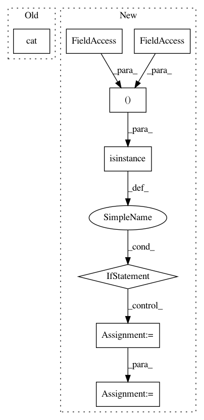

2154d789ef0d79debe2cc522751ae7072e8b22dc,torchsample/modules/super_module.py,SuperModule,predict_loader,#SuperModule#Any#Any#Any#,475
Before Change
batch_pred = self(x_batch)
preds.append(batch_pred.data)
self.train()
return Variable(torch.cat(preds))
def predict_on_batch(self,
x,
After Change
verbose=1):
prediction_list = []
for batch_idx, batch_data in enumerate(loader):
if not isinstance(batch_data, (tuple,list)):
batch_data = [batch_data]
input_batch = batch_data[0]
if not isinstance(input_batch, (list,tuple)):
input_batch = [input_batch]
input_batch = [Variable(ins) for ins in input_batch]
if cuda_device > -1:
In pattern: SUPERPATTERN
Frequency: 3
Non-data size: 8
Instances
Project Name: ncullen93/torchsample
Commit Name: 2154d789ef0d79debe2cc522751ae7072e8b22dc
Time: 2017-04-28
Author: ncullen@modv-vlan533.0527.apn.wlan.wireless-pennnet.upenn.edu
File Name: torchsample/modules/super_module.py
Class Name: SuperModule
Method Name: predict_loader
Project Name: rusty1s/pytorch_geometric
Commit Name: 7dcac0991554a03404cdc0b73ae142b3e615d6cd
Time: 2020-05-08
Author: matthias.fey@tu-dortmund.de
File Name: torch_geometric/utils/subgraph.py
Class Name:
Method Name: k_hop_subgraph
Project Name: rusty1s/pytorch_geometric
Commit Name: c537593c53fd85995c7b780a881cd4aec14f7bd2
Time: 2020-05-31
Author: matthias.fey@tu-dortmund.de
File Name: torch_geometric/utils/subgraph.py
Class Name:
Method Name: k_hop_subgraph